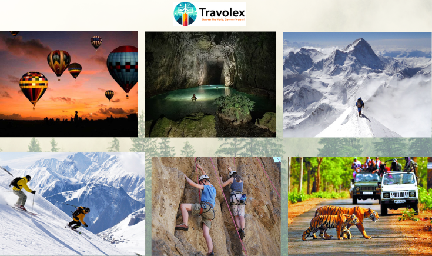

21 September
India has been identified as a land of variation in geographical features and cultures, thus availing unlimited activities for adventure buffs to discover its natural beauties. From the snow-capped peaks of the Himalayas to the dense forests of Western Ghats, the country is a haven for people seeking adrenaline-pumping activities. Travolex will take you through some of the exciting adventure sports in India-from high-altitude treks and underwater explorations to wildlife safaris, this guide will inspire your next adventure trip.
1. Explore the Sky: Hot Air Ballooning Over Rajasthan
Where to Go: Jaipur, Pushkar, Udaipur
- This would include the thrilling hot air balloon ride over some beautiful forts, palaces, and deserts in Rajasthan to experience the state's plush heritage from the sky, along with breathtaking landscapes.
- For Ideal Visitation: October to March.
- Just imagine flying over the magnificent Amber Fort in Jaipur or getting an aerial glimpse of the Pushkar Fair. Hot air ballooning in Rajasthan is a thing not to be missed because it has just the right amount of adventure coupled with luxury. In fact, this is quite a serene yet exhilarating way to see the splendor of India's royal state.
2. Conquer the Peaks: Trekking in the Himalayas
Where to Go: Manali, Dharamshala, Spiti Valley
- A trekker's paradise, Himachal Pradesh offers various types of trekking right from the easy, soft ones to the very tough and challenging ones. It provides all state-of-the-art facilities from the lush green of Kullu Valley to the stark beauty of Spiti Valley.
- Best Time to Visit: May to October
- With numerous popular trekking trails, Himachal Pradesh is a trekker's paradise. The Beas Kund trek in Manali offers great views of the mighty Pir Panjal range, while the Triund trek near Dharamshala offers breathtaking panoramic vistas of the Dhauladhar mountains. Spiti Valley, on its part, is all rugged landscape and far-flung monasteries; hence, it offers more challenging treks for the seasoned adventurer.
3. Descend into Mystery: Caving in Meghalaya
Where to Go: Siju Caves, Mawsmai Caves, Liat Prah Cave System
- Exciting Experience: A fabulous world beneath Meghalaya- Hence, this state contains some longest and deepest caves in India with the peculiarity of underground rivers, waterfalls, and unique rock formations.
- Best Time to Visit: November to February
- The 'Abode of Clouds,' Meghalaya, also has some real treasure hidden for spelunkers. One of the longest caves in India, Siju Cave is a haven for adventure enthusiasts. Then there is Mawsmai Cave, famous for its limestone patterns, far easier and shorter to explore, and hence recommended even for novice spelunkers. The Liat Prah Cave System forms part of the Jaintia Hills and is ideal for those who would love to venture into the less-known underground passages.
4. Glide on Snow: Skiing in Auli
- If one talks about skiing in India, the best place that comes to mind is Auli. This is a calm place with good landscapes, frequent snow, and great views of the Nanda Devi and Mana Parbat peaks. Therefore, it allures new learners and professional skiers.
- The best time to visit is December to February.
- Auli has been termed the 'Switzerland of India'; one can get some of the best skiing options within the country. Be it for a novice or a consummate, the slopes are just right for all categories. The region comes fitted with modern amenities such as chair lifts and ski resorts, which make the sport nothing less than comfortable and thrilling.
5. Encounter the Wild: Safaris in Madhya Pradesh
Where to Go: Bandhavgarh National Park, Kanha National Park, Pench National Park
- Experience: Madhya Pradesh shelters a few of India's most famous national parks, which house Bengal tigers and leopards, among others.
- Best Time to Visit: During the months of October to June
- It is the land of ultimate fantasy for a wildlife lover. Bandhavgarh National Park is known for the high density of Bengal tigers and comprises the best possible sight for these grand beasts in India. Besides, Kanha National Park, which inspired Rudyard Kipling to create The Jungle Book, takes you into the vast green stretches of rich biodiversity-from leopards to sloth bears. Next comes Pench National Park, another must-see by the wildlife enthusiast because of its varied flora and fauna.
6. Rock Climbing in Maharashtra
Places: Lonavala, Malshej Ghat, Bhivpuri
- Experience: State of Maharashtra has several places representing rappelling and rock climbing in the Western Ghats. During the monsoon season, waterfalls down the cliffs add an extra thrill.
- Best Season: June to September -Monsoon Rappelling, October to February - Rock Climbing
- Besides rappelling and rock climbing, many other adventure activities create a hub at the Western Ghats of Maharashtra. Water gushes down during the monsoon season from the cliffs of these places, thereby turning them into the perfect destination for any adventurer, especially for waterfall rappelling. You can check out popular spots at Lonavala and Malshej Ghat, where you can pitch your climbing skills against a backdrop of stunning landscapes.
Why Choose Travolex for Your Indian Adventure?
At Travolex, we design customized adventure itineraries that match your aspirations and abilities. With our local experience, you are not only visiting popular spots; you will also see the hidden gems which make India a unique adventure destination. Here is why you should plan your next adventure with us.
Customized experiences, whether one is an action person or just a curious tourist. The packages offered are inclusive to one's needs.
Certified Guides and Safety Protocols: Your safety is our top priority; hence, we work with experienced guides and provide top-quality equipment.
Exclusive Access: Special privileges include early morning safaris, private tours, and unique cultural experiences.
India has everything an adventure-seeker can dream of-from the snowy peaks of the Himalayas to the thick jungles of Madhya Pradesh. With Travolex, experience the ultimate with added assurance of expert planning for safety. Whether it be your first or yet another in the bucket list, Travolex will make this dream trip of yours happen.